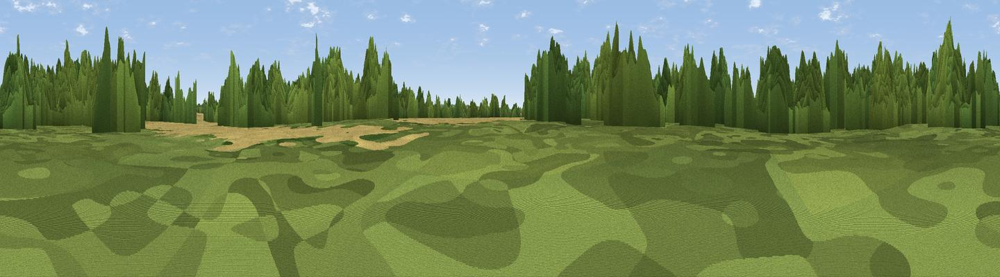

Bradley Hill
#44454 in England · top 82% of its area beats it · near BradleyWhere it is
The exact computed spot (SU 64100 43107). Click the marker for map links.
The view, rendered

A 360° render of this exact spot computed from the terrain model, tree cover and land cover — summer colours, afternoon light, calibrated against photographs of famous viewpoints. Real trees, hedges and buildings will differ in detail.
The panorama
Grey silhouette: terrain skyline in each direction (720 bearings, Earth curvature and refraction included). Dashed green: skyline with trees (+15 m) and buildings (+8 m) as obstacles. Blue strip: how far the ground is visible on each bearing.
Where the view opens
Wedge length = distance to the farthest visible ground on that bearing (vegetation-aware). Rings at 10, 25 and 50 km.
What fills the view
46% woodland · 44% cropland · 10% grassland ·
Angular shares of the visible panorama (visual magnitude), not map area. Landscape diversity 0.43 (0–1 Shannon).
Key numbers
More beautiful places nearby
The staircase of upgrades: each row has a higher view potential than everything closer. Driving times are estimates from straight-line distance, calibrated against real road routing — check an actual route before setting out.
| Place | Direction | Drive | Score |
|---|---|---|---|
| Viewpoint near Preston Candover | W · 2 km | ~6 min | 27.2 |
| Viewpoint near Dummer | NW · 5 km | ~11 min | 38.6 |
| Viewpoint near Cliddesden | NNE · 5 km | ~11 min | 44.9 |
| Viewpoint near Ramsdell | NNW · 13 km | ~25 min | 45.8 |
| Horsedown Common | ENE · 13 km | ~25 min | 54.8 |
| Noar Hill | SE · 16 km | ~28 min | 59.8 |
| Cottington's Hill | NW · 18 km | ~31 min | 65.0 |
| Viewpoint near Steep | SSE · 19 km | ~32 min | 68.7 |
51.18360, -1.08427 · source: osm peak · position refined by local search. Computed location — check access rights before visiting.